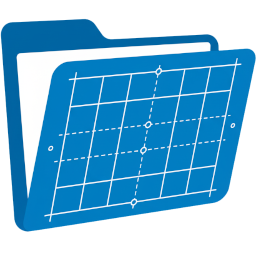
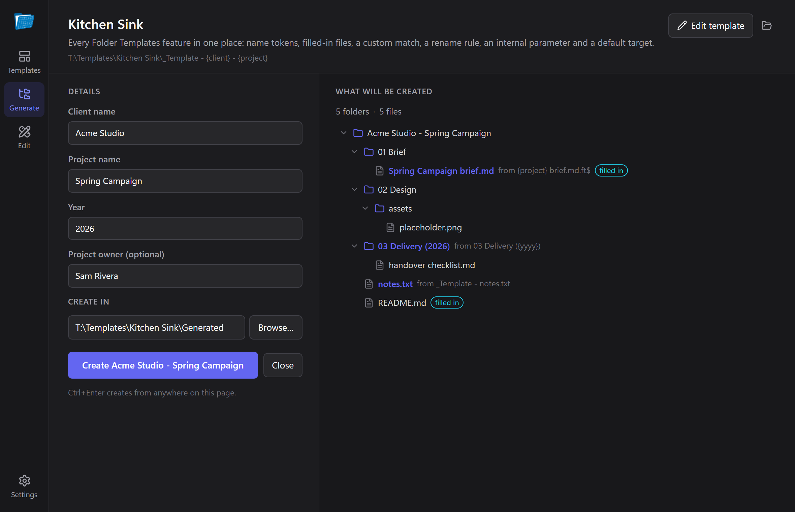
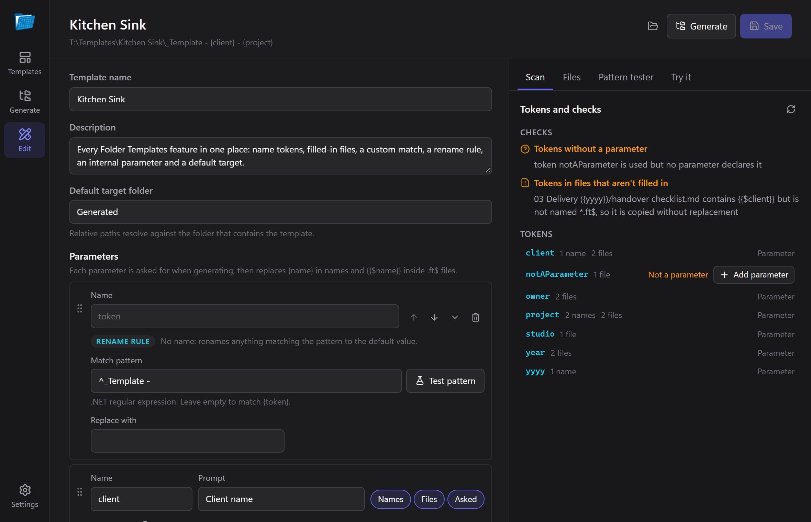
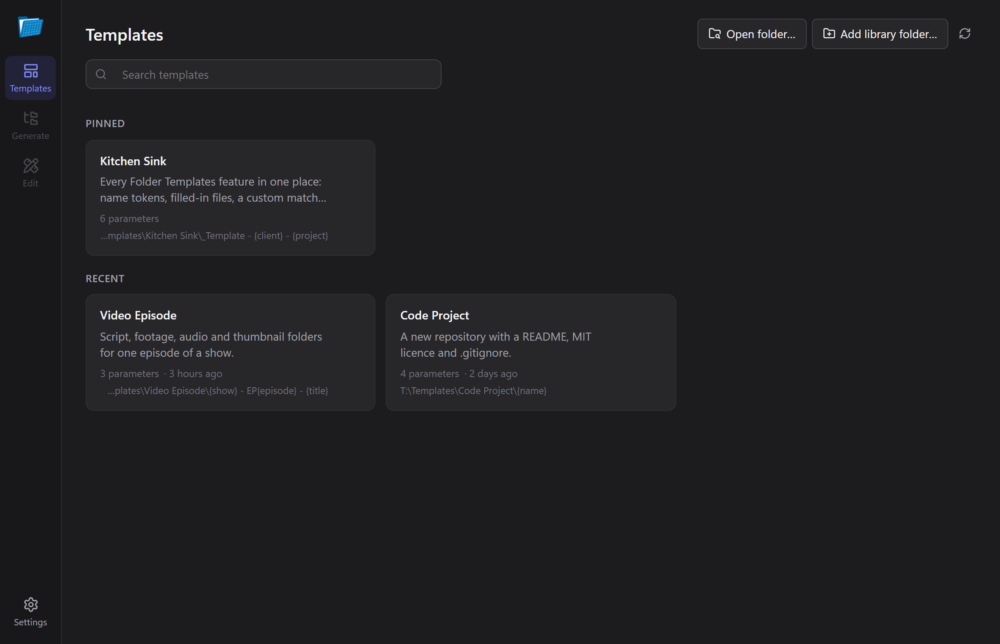
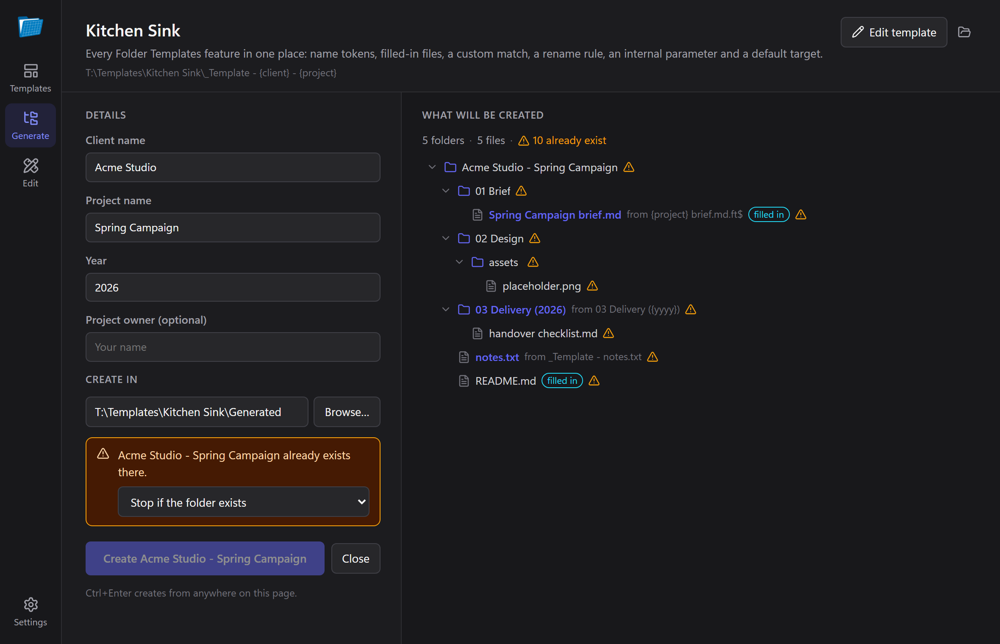
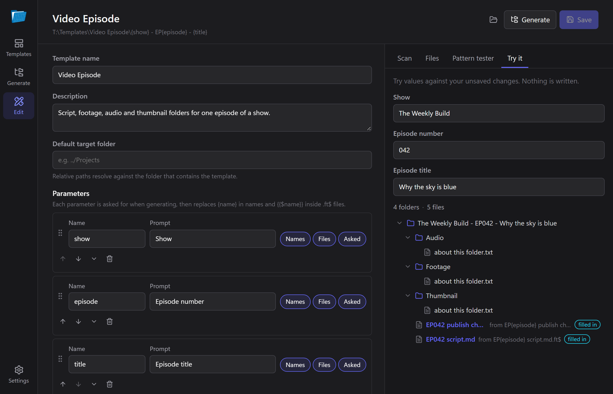
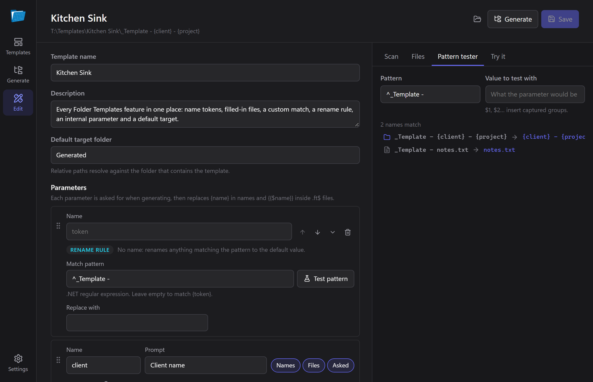
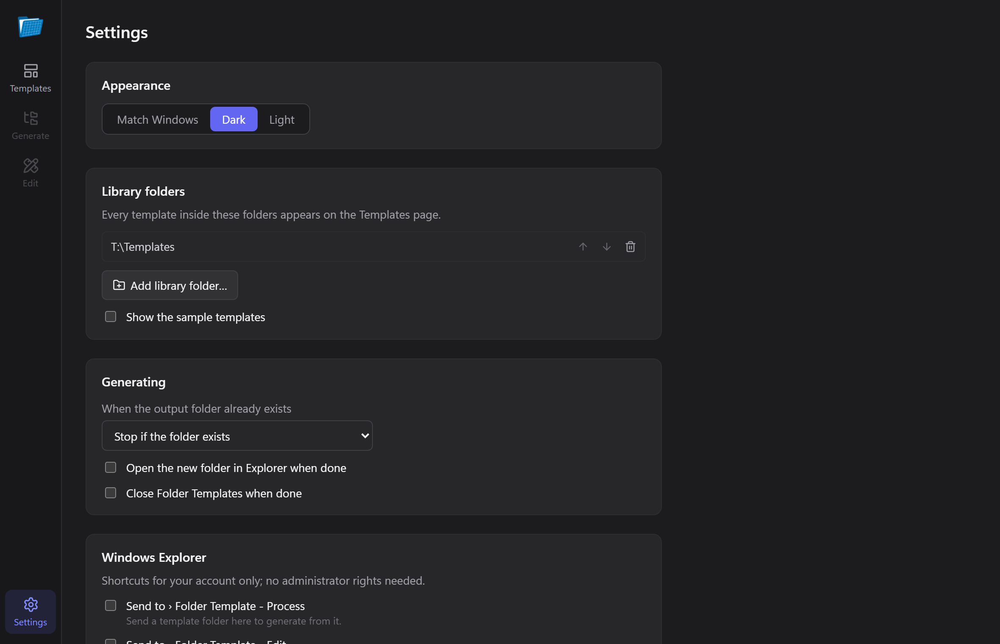

Lay it out
Folders, starter files, the logo you always paste in. Whatever a new project needs.

Folder TemplatesKeep a folder the way you like new projects to start. Folder Templates asks a few questions, then builds the whole thing for you: folders created, files named, and their contents filled in.
You see exactly what it will make before it makes it, and it won't touch anything that's already there unless you say so.
Free and open source. No account, no telemetry, no admin rights to install.

A live preview shows every folder and file it will create, updating as you type.
If the folder already exists, it stops and asks: add what's missing, replace, or leave it be.
Right-click inside any folder in Explorer, pick a template, done. Send To works too.
Same template format, same shortcuts, same command-line flags. Nothing to convert.
No special format to learn. Lay a folder out the way every new project should start, and mark the bits that change.
Folders, starter files, the logo you always paste in. Whatever a new project needs.
Write {client} in a name, or {{$client}} inside a file. The editor spots them
and turns them into questions.
Answer the questions, check the preview, and it builds the folder where you want it.
{client} - {project}/ ├─ 01 Brief/ │ └─ {project} brief.md.ft$ ├─ 02 Design/ ├─ README.md.ft$ └─ .ft/template.json
Acme Studio - Spring Campaign/ ├─ 01 Brief/ │ └─ Spring Campaign brief.md filled in ├─ 02 Design/ └─ README.md filled in
Files ending in .ft$ get their {{$tokens}} filled in;
everything else is copied exactly. The hidden .ft folder holds the questions and is never
copied.
Everything the original did, plus the parts you used to do by hand in Explorer.
The folder tree it will create, renamed and badged as you type. Click a filled-in file to see its contents before and after.
Tokens inside files become the client, the date, the title. Everything else is copied byte for byte, images included.
Stops by default. Choose to add only what's missing, or to replace files — and a replace that fails keeps the original.
Name, describe and arrange the questions, with problems flagged as you type. Turn any folder into a template in a minute.
Finds every token in names and files, offers to turn new ones into questions, and catches tokens sitting in files that won't be filled in.
For the power users: rename with full .NET regular expressions and see exactly which names a pattern will change.
Point it at the folders where you keep templates. Search them, pin favourites, and pick up recent ones.
Right-click menus and Send To shortcuts, for your account only. No administrator rights needed.
An ft command for scripts and build steps, which also understands the 1.0 console's
flags.
Drop any folder on the app and it offers to turn it into a template. The editor finds the tokens you've written, turns them into questions, and tells you when something won't do what you expect.

You're usually looking at the folder where the new project should go. Right-click the empty space, choose New from template here…, pick one, and it's made right there.
ft generates, previews and checks templates from any terminal, and speaks the 1.0 console's
syntax, so existing scripts keep working.
PS> ft generate ".\Templates\Video Episode\{show} - EP{episode} - {title}" ` --target C:\Videos --set show="The Weekly Build" --set episode=042 ` --set title="Why the sky is blue" --dry-run Would create in C:\Videos\The Weekly Build - EP042 - Why the sky is blue: The Weekly Build - EP042 - Why the sky is blue/ Audio/ about this folder.txt EP042 publish checklist.md [filled in] EP042 script.md [filled in] Footage/ about this folder.txt Thumbnail/ about this folder.txt PS> ft -sourceFolder ".\Templates\Code Project\{name}" -targetFolder C:\Code -name mytool -nowait -noprompt # 1.0 syntax
Also: ft params, ft info, ft validate and
ft scan, each with --json for tooling.
Dark or light, following Windows. Click any screenshot to enlarge it.





.ft/template.json, PascalCase or camelCase{name} tokens, custom .NET patterns and .ft$ files-listParams json output{{$Token}} matches regardless of case; file encodings are preserved Author's note
Author's note
Folder Templates began as a small WinForms utility I wrote to stop hand-building the same project folders over and over. Version 2 is a ground-up rewrite, made with Claude: same templates, a much nicer app.
The engine underneath is shared with BRUV, where it builds workspace folders for projects. If you make new folders more than once a week, it'll probably save you some clicks. If not, no worries.
— Harvey
Windows 10 and 11. The installer isn't code-signed, so SmartScreen may ask: choose More info → Run anyway.